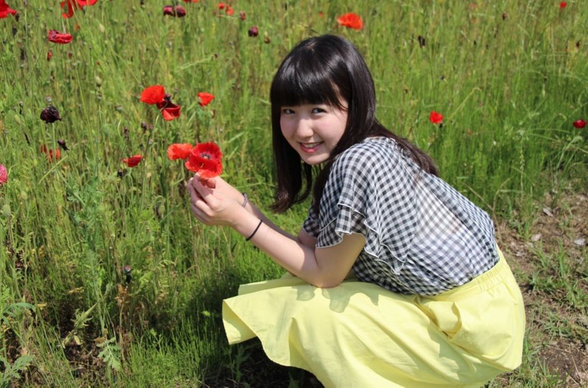
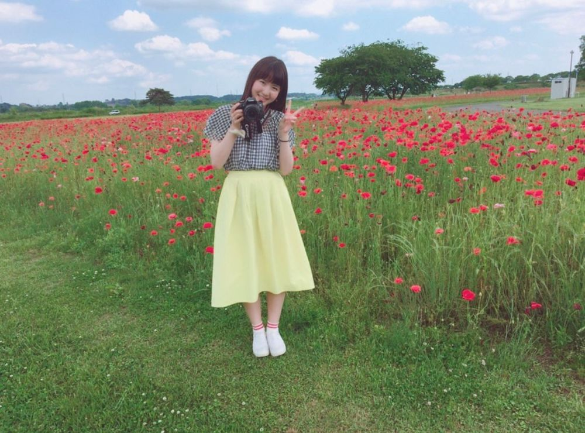

やっほ〜😁
ひいだよ🍓

急だけど4年前くらいの写真！
お父さんとお花畑行ったときに撮った📸
お父さんに
一眼レフで撮ってもらったよ〜☺️
あっそうそう！
髪の毛の色が抜けてきた！！
紫→グレーっぽくなってる😳
ひいグレーにしてみたいなって思ってたから
コンサート終わってからは
色がなるべく早く落ちるように
お湯で髪の毛洗ってる🧴笑
コンサートのときは
紫維持するために寒い中冷水で
毎日頭洗ってたのよ🥶🥶🥶
本当に毎回
うぉぉぉぉおって言いながらシャワーしてた🚿
だけど不思議なもので
毛先の方は早く色落ちするのに
頭皮に近い方の髪の毛は
色がなかなか落ちなくて。。。
とても不思議な色🙂
決して綺麗とは言えない🙃ㅋㅋㅋ
これから髪の毛の色どうしようかな〜
色もそうだけど長さも。。。
せっかくブリーチしたんだから
すぐ暗く戻すのも勿体ない気もするし。。
迷うねえ🤨
ヘアスタイルって一生の悩みヨネ🤔💭
ではまたっ
오늘은 오랜만에 원피스 입었어👗♥️
봄은 역시 원피스~><
와... 잠깐만
紫→グレーっぽくなってる😳
ひいグレーにしてみたいなって思ってたから
コンサート終わってからは
色がなるべく早く落ちるように
お湯で髪の毛洗ってる🧴笑
コンサートのときは
紫維持するために寒い中冷水で
毎日頭洗ってたのよ🥶🥶🥶
本当に毎回
うぉぉぉぉおって言いながらシャワーしてた🚿
だけど不思議なもので
毛先の方は早く色落ちするのに
頭皮に近い方の髪の毛は
色がなかなか落ちなくて。。。
とても不思議な色🙂
決して綺麗とは言えない🙃ㅋㅋㅋ
これから髪の毛の色どうしようかな〜
色もそうだけど長さも。。。
せっかくブリーチしたんだから
すぐ暗く戻すのも勿体ない気もするし。。
迷うねえ🤨
ヘアスタイルって一生の悩みヨネ🤔💭
ではまたっ
오늘은 오랜만에 원피스 입었어👗♥️
봄은 역시 원피스~><
와... 잠깐만
다음주는... 벌써 4월이야?!!!?!
진짜 시간이 빠르다... 그치?
나 4월이 되면 자전거 타고
한강 가고싶어🚲💨
아침에 일찍 일어나서 가면
진짜 기분 좋겠다🥺
일본에 있을땐 자전거 진짜 많이 탔었는데...
토치기는 차나 자전거 없으면
어디 가든 좀 힘ㄷ...🥲ㅎ
학교 갈 때도 항상 자전거 탔었어!!!
가끔 아침에 못 일어나서
엄마가 차로 학교까지 보내주셨는데
집에 갈 때는 한시간정도 걸어야 돼서
너무 힘들었던 기억...ㅎㅎㅎ
그때는 걷는 것도 싫어했고
아침도 항상 못 일어나는 사람이었는데ㅎ
지금이랑 완전 대방대네ㅎㅎㅎ
휴... 오랜만에 자전거 타고싶다ㅎ

これもあるよ〜😀
前髪ぱっつん時代が懐かしい🙄
ばいばーい👋🏻
ひいまる🥟